广泛存在于中国渤海、黄海、东海和南海海域的4大海域的有害藻华已经成为中国近海海域最严重的海洋灾害问题。21世纪以来的频发爆发的有害藻华已经对中国近海生态系统安全产生了显著的负面影响。
常发生于中国海洋近岸的河口、海湾等区域的有害藻华能造成大量的海洋生物伤亡，从而给近海养殖业、人体健康和海洋生态系统安全带来不容忽视的损害。近年来，全球气候变暖和人为污染物排放量显著增加的背景下，近海爆发愈发频繁的有害藻华的给中国海洋污染监测和治理带来巨大的挑战。
由于21世纪之前的中国近海有害藻华数据统计资料的分散性和有限性，中国近海有害藻华年际变化分布以及其发生变化机制的相关研究进展十分有限。
项目介绍
近年来，已成为中国近海突出的海洋生态灾害问题的有害藻华对人体健康、社会经济和海洋生态安全造成了威胁。定量化有害藻华的时空分布和其主要原因种的变化，探究有害藻华发生机理对改善和控制有害藻华事件发生至关重要。
基于《中国赤潮灾害调查与评价1933-2009》、《赤潮100问》书籍，1989-2018年的《中国海洋环境质量状况公报》、2000-2018年的《中国海洋灾害公报》、《中国东海海区海洋环境公报》、《浙江省海洋环境状况公报》、《舟山市海洋环境状况公报》等国家、各海区和各省市的海洋公报年等文献资料，本项目校对和补充了由余弋和黄睿整理的1933年以来的中国渤海、黄海、东海和南海的有害藻华事件，量化了其时空分布变化。
从《中国赤潮灾害调查与评价1933-2009》以及相关网站收集有记录的有害藻华相关的所有原因种的相关界门科目科属种的相关信息，统计各海域有害藻华的主要原因种的时空分布特征。
从NOAA等网站获取了各海域对应的流域氮、海洋表面温度、风速、降水等观测和再分析的数据。使用广义线性回归建立了各个海域的特定原因种的有害藻华频数变化的驱动模型以此计算出能在最大程度解释其变化的变量组合。
项目资助方桃花源生态保护基金会蓝色倡议专项，是专注于海洋保护的资助型项目，汇集了一批热心海洋保护的企业家和慈善家共同支持海洋保护工作。 将支持高校、科研院所和社会组织展开一线保护行动。在桃花源生态保护基金会的支持下，上海交大海洋学院周韫韬团队进行了中国近海有害藻华项目的工作。
有害藻华的定义
有害藻华(Harmful algal Blooms, HAB)是在一定条件下，由海洋浮游微藻或大型藻类等快速增殖或聚集，导致海洋生态系统严重破坏或引起水色变化的一种灾害性海洋生态异常现象。 赤潮（Red tide）和褐潮（Green tide）和绿潮（Brown tide）是中国HAB的主要类型。HAB常发生于东海、渤海和南海海洋近岸的河口、海湾等区域，近海,其中渤海湾、长江口和珠江口等海域是中国HAB的热点地区。
赤潮(红潮)是指在一定环境条件下，海洋中的浮游微藻、原生动物或细菌等在短时间内突发性链式增值和集聚导致的水色变红的灾难。
绿潮是海洋中一些大型绿藻（如浒苔）在一定环境条件下暴发性增殖或聚集达到某一水平，导致生态环境异常的一种现象。2008-2019年中国黄海海域持续发生浒苔灾害。
褐潮（微微型藻藻华）是在一定环境条件下，海洋中的微微型浮游植物(以抑食金球藻为主)导致的水色变褐的灾难性海洋生态异常现象。该种HABs仅发生在美国、南非和中国附近海域。于此同时，该种HABs给近海生态系统造成了显著的伤害。
有害藻华的危害
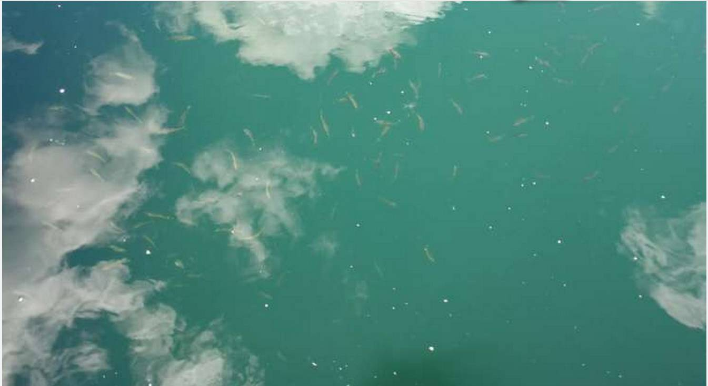
HABs能导致大量海洋生物死亡
危害人体健康
HABs能产生显著的渔业经济损失
影响滨海景观
HABs能能破坏海洋生态系统
有害藻华的原因种类型
基于HABs统计数据可知，甲藻、硅藻是中国4大海区HABs的主导原因种。于此同时，着色鞭毛藻和蓝藻等原因种也有零星分布，作为有毒有害原因种主导的HABs则能使海洋生态安全和社会经济遭受损失。由于不同藻种的生长环境有所差异，不同海区不同年际和季节尺度下的HABs的主导原因种类型分布差异显著。中国近海HABs常见的主导原因种有：
甲藻：东海原甲藻、夜光藻（无毒），米氏凯伦藻（有毒）。
硅藻：中肋骨条藻（无毒），伪柔弱拟菱形藻（有毒）。
着色鞭毛藻：海洋卡盾藻（有毒），抑食金球藻（有毒）。
蓝藻：汉氏束毛藻（无毒），铜锈微囊藻（有毒）。
东海有害藻华的时空分布
1933年至今，中国4大海域的HABs频繁发生，其中东海是中国HABs爆发最严重的海域。1933-2018年期间，东海海域共发生了929次HAB,累计面积超过18 km2 ，HABs产生的累计直接经济损失则高达27亿元。
长江入海口到浙江一带海域是东海HAB灾害最为严重海域，其中94%的单次计面积大于1000 km2 的HABs发生于此，并且其主导原因种为东海原甲藻和米氏凯伦藻为主。集中爆发的大型HABs给长江口的海洋生态环境安全造成了很大的隐患,爆发于浙江舟山海域的HABs易使当地近海水产生直接经济损失。与之相比，福建沿海的HABs则以中小型（面积不大于1000 km2 ）为主。但，该区域以米氏凯伦藻为主导原因种的HABs则使福建近海水产养殖业产生了高达24亿元的直接经济损失。
从季节变化分布来看，71%的东海HABs爆发于5-7月,其他月份的HABs零星分布。自2000年以来，在寒冷的月份（10月至3月）发现了更多的小范围赤潮事件。
从年际变化分布来看，1981年后，东海HABs的年累计面积有先波动增加后降低的趋势，其在1990年，2004和2005年达到峰值。东海HABs的年频率也有所增加，其在1991年达到峰值，随后有所下降。2000年后，HABs年频率再次大幅上升，2003年达到高峰，随后再次下降。991年至1999年，HABs年累计面积不足1000km2 ，可能是由于监测强度和技术有限。相比之下，2000年以后HABs发生的频率更高，2000-2010年，HABs年面积均超过6300km2 [1] 。
东海有害藻华的分布特征
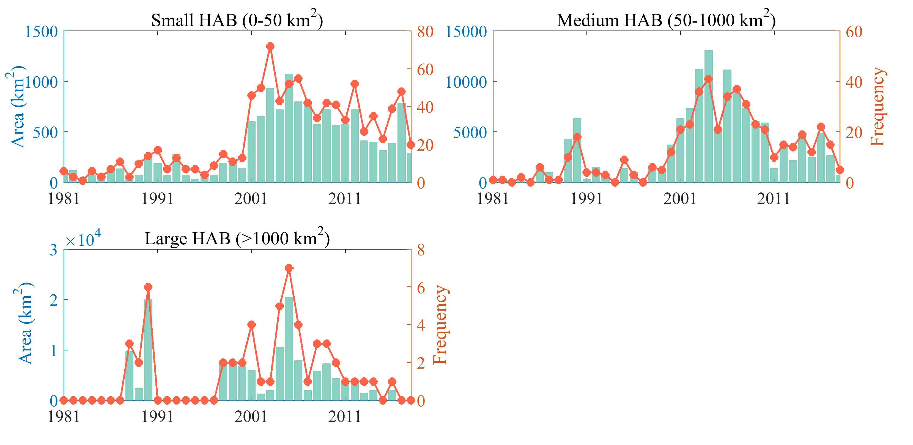
基于东海HABs的单次累计覆盖面积的大小，HABs可被分为3个等级：小型HABs(0-50km2 ), 中型HABs(50-1000km2 )和大型HABs>1000km2 )。相比较与大中型HABs，小型HABs是东海HABs的总体上的频数变化分布最为一致，而大型HABs的年累计面积则与东海总体的HABs面积年度变化的相关性更高。
小型HABs的频数占东海总体的HABs的50%以上，并且造成经济损失93%的HABs为中小型HABs。小型HABs是东海HABs的主导类型，其在2003年达到峰值(72次)，随后开始波动下降，但其年频数在20次以上。对于中型HABs，在2001-2010年期间的年频数都在20次以上，而在其他时间段内的频数常低于5次。大型HABs对东海年度频数的贡献度很小，但其的爆发与否对HABs的年度累计面积变化至关重要。
东海有害藻华的经济损失
近年来，以米氏凯伦藻和东海原甲藻为主导原因种的HABs使东海近岸的海水养殖业蒙受了巨大的经济损失。
从季节分布来看，93%的产生了显著经济损失的HABs集中发生于5-6月，其他月份的HABs很少使东海近海水产养殖业产生显著的直接经济损失。
从年际变化分布来看，1997年起，东海HABs的直接经济损失开始快速增加，2012年达到峰值 （20亿元），此后年份的HABs没有产生明显的直接经济损失。于此同时，福建海域的HABs产生经济损失的热点海域，63%的HABs产生了东海HABs的88%的经济损失。
[1] Zhou Y *, Weijin Yan, Wenyu Wei. (accepted) Effect of sea surface temperature and precipitation on annual frequency of harmful algal blooms in the East China Sea. Environmental Pollution.
东海有害藻华原因种空间分布
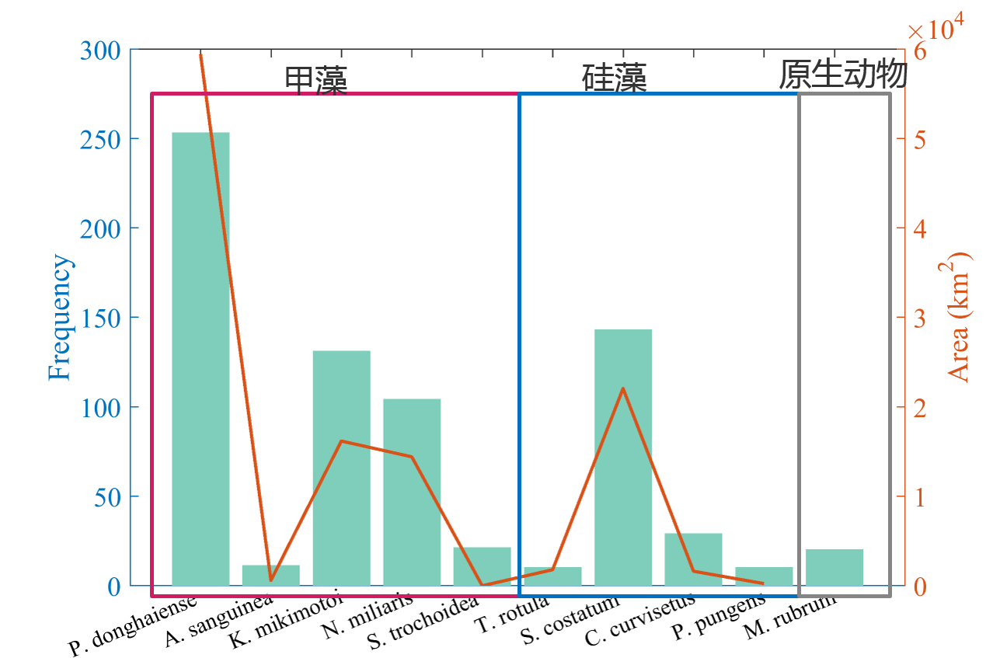
1933年以来，东海海域有详细信息记录的HABs中共出现了53种原因种，其中包含14种有毒有害原因种(如米氏凯伦藻(K.mikimotoi)和球形棕囊藻(P.globose))以及21种特有原因种(东海原甲藻(P.donghaiense)、短凯伦藻(K.brevis)和环胺藻(Azadinium)等)。甲藻、硅藻和原生动物是东海HAB最常见的原因种，其中主导着东海71%的HABs的甲藻是东海HABs的主导原因种。东海原甲藻是累计频数和累计面积最高的藻种，米氏凯伦藻、夜光藻(N.miliaris)中肋骨条藻((S.costatum),硅藻)也是累计频数和累计面积较高的原因种。从HABs原因种的分布来看:
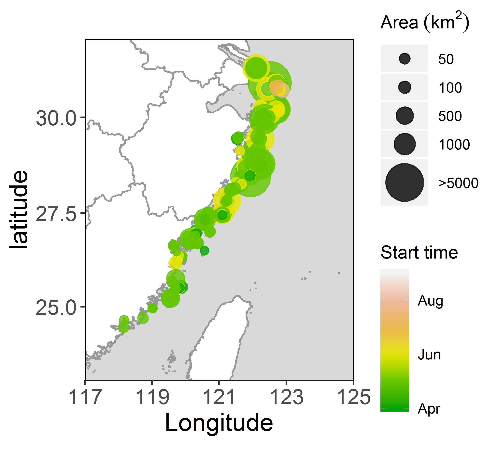
东海原甲藻是东海HABs的主导原因种，其主导的HABs累计频数和累计面积显著高于其他原因种。东海原甲藻主要分布在福建宁德以北海域，并且89%的该原因种的HABs爆发于海表温度较高的5-6月份。该藻种虽无直接毒性，但大规模积聚的东海原甲藻能使海洋生物缺氧，并且腐烂的东海原甲藻能对鱼类等动物产生生理伤害从而危害海洋环境。
米氏凯伦藻是东海海域累计频数和面积最高的有毒有害的原因种。该原因种能产生细胞毒素、溶血毒素和糖脂类毒素等毒素，其产生的溶血毒素和细胞毒素可造成鱼类大量死亡，该原因种主导的鱼毒性HABs造成了显著的经济损失。几乎(94%)都分布于5-6月的该原因种的HABs，该藻种主导的HABs造成了高达21亿元的经济损失。其中，福建海域内的该原因种主导的HABs则产生了97%的经济损失。
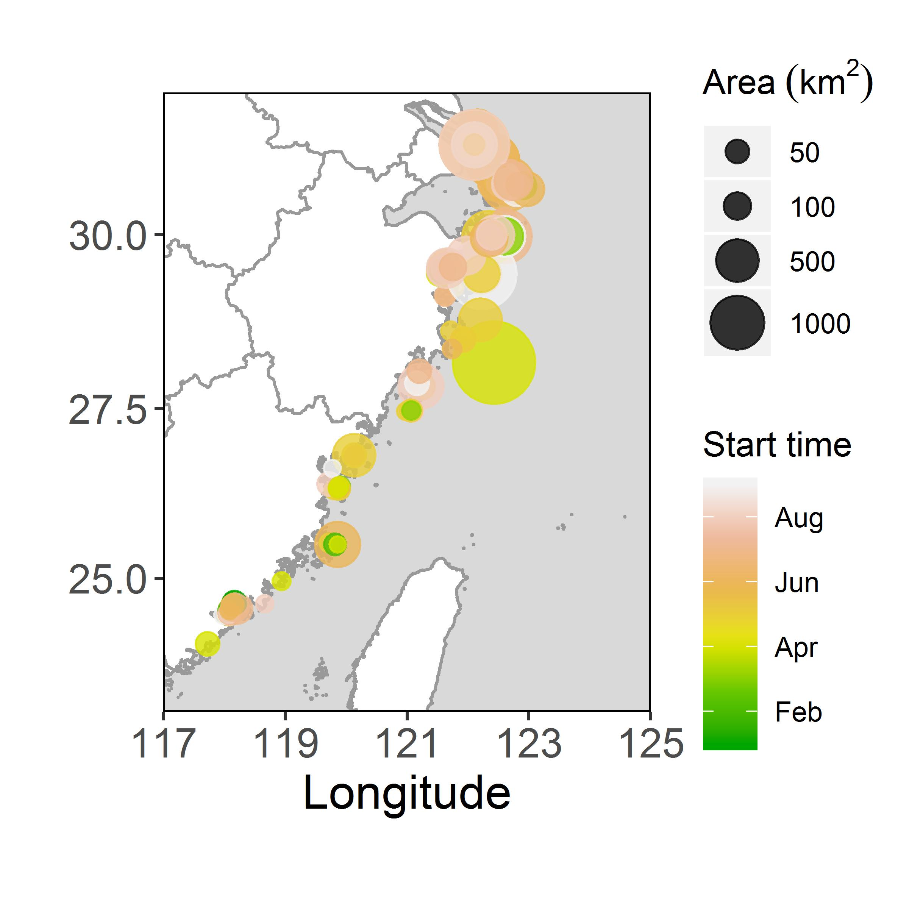
作为东海HABs累计频数和面积最高的硅藻-中肋骨条藻主导的HABs主要爆发于浙江海域，并且其主导的大型HABs都爆发于福建以北海域。与其他原因种的集中分布的特征相比，虽然78%的中肋骨条藻主导的HABs发生于5-8月，但在2和9月份等时间段也常有分布，并且其HABs主要分布于夏季。
东海有害藻华原因种时间分布
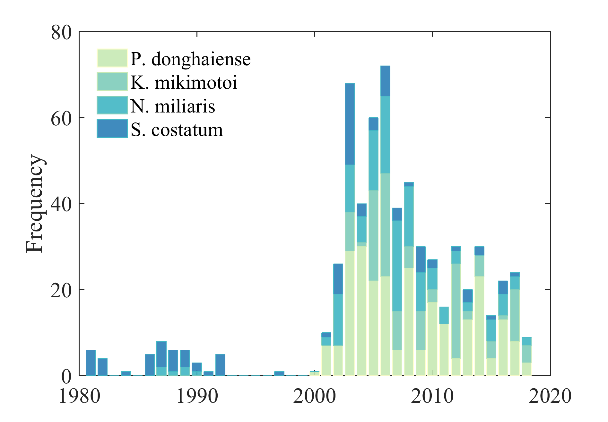
东海HABs原因种年际分布
近年以来，东海HABs的年度主导原因种程多样化、有害化趋势。21世纪前，东海HABs的年度主导原因种为甲藻门的夜光藻，主导原因种种类单一;2000-2018年期间：东海原甲藻，米氏凯伦藻和中肋骨条藻交替成为不同年度的主导原因种。21世纪后，在HABs记录信息更加完善以及东海HABs种类更加多元化的背景下，东海HABs的年际主导原因种逐渐从无毒有害的甲藻转变为有毒有害的东海原甲藻和米氏凯伦藻。
从HABs年总体际分布的来看，东海原甲藻和米氏凯伦藻是2000年后的东海HABs的主导原因种。
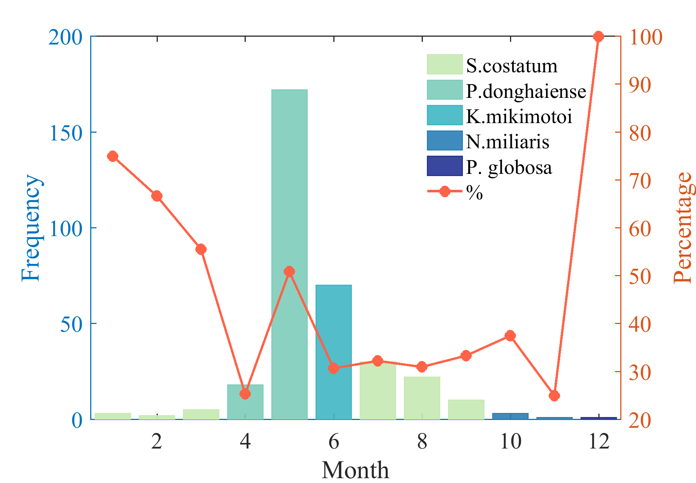
东海HABs原因种季节分布
从季节分布上来看，硅藻(中肋骨条藻为主)为1-3, 7-9月份的东海海域HABs的主导原因种(主导的HABs累计频数最高)；东海原甲藻则为4-5月的HABs的主导原因种;米氏凯伦藻和东海原甲藻则主导着6月份的HABs;同时夜光藻仅主导10月份的东海的HABs。
从HABs的主导原因种的总体季节分布的来看，东海原甲藻和米氏凯伦藻是东海HABs高发期的主导原因种，其主导的HABs的爆发次数的多少将决定当年东海HABs的严重程度。
东海有害藻华的有毒有害原因种分布
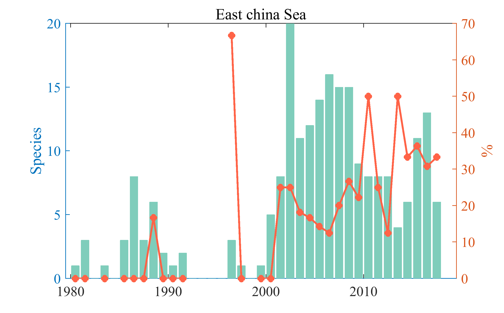
有毒有害原因种的HABs集中出现于21世纪后，故2000年前的各个海域的有毒有害藻种仅零星分布。21世纪后，东海HABs的原因种开始多样化，并在2003年达到峰值(20种)，随后开始下降，但在2003-2009年期间的原因种都在10种以上。HABs的原因种种类的有毒有害藻种比例在统计上有显著增加的趋势(p<0.05),并且有毒有害原因种主导的HABs的地理范围在不断扩大。
从有毒有害原因种的年际分布看，米氏凯伦藻则是该海域绝大大数年份的主导有毒有害原因种，此外赤潮异弯藻和红色赤潮藻也是部分年份的主导有毒有害的原因种。从其季节分布来看，米氏凯伦藻其主导着6-9月份的有毒有害的HABs，并且给东海沿岸省市带来了严重的经济损失。然而，赤潮异弯藻对5月份的有毒有害的HABs影响较大，其他月份并未出现频数超过2次相同有毒有害原因种主导额HABs。
东海有害藻华的环境特征
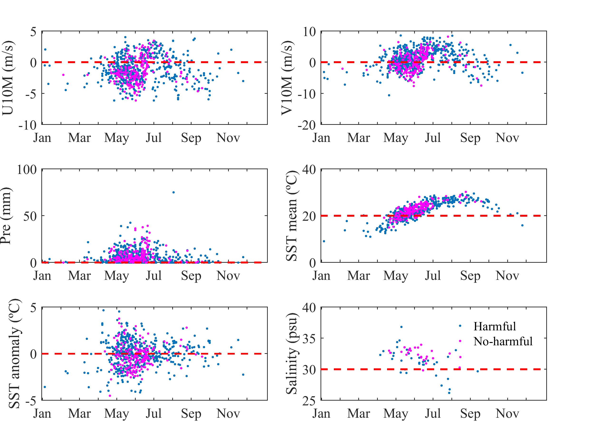
基于各个有持续时间和地理位置等具体信息记录的HABs，本研究统计了1987年以来的HABs爆发的地理范围内的降水(Pre), 海洋表面温度(SST), 海洋表面温度异常(SST_a),风向风速(Wind)和2015-2018年的盐度(Salinity)等变量。在此基础上，本文统计了东海海域的有详细记录的HABs在开始、持续和结束期间的具体的海洋环境变量的分布特征。
从HABs爆发的和消亡的过起始程中的环境因素的变化来看，海洋表面温度的变化对东海HABs的爆发和终止有重要的作用。1981年以来，海洋表面温度(SST)的变化对东海海域的HABs的产生和消亡有重要影响，其中70%的所有有具体时空数据信息的HABs经历了SST升温，62%的HABs则在SST升温中消亡。于此同时，其他变量的变化趋势并无高于50%的相同的变化趋势特征
对于东海HABs爆发时的海洋环境因素来说，温度和风速风向对大部分的HABs的爆发息息相关。其中，71%的东海海域的HABs的主导风向微弱的南风，并且88%的8月后的HABs都经历了南风。此外，73%的HABs的SST在20℃以上，并且7-10月的HABs的SST都高于21℃，这表明较高的SST对该海域的HABs持续发展有重要的作用。对于集中发生于5-7月的有毒有害的HABs来说，79%的HABs的SST甚至都高于20℃.
总体上来看，由于海洋表面风的运输和扩散的能力以及海洋表面温度对藻类繁殖速率的影响作用，风速风向和海洋表面温度对东海的HABs影响深刻。
东海原甲藻主导的有害藻华的环境特征
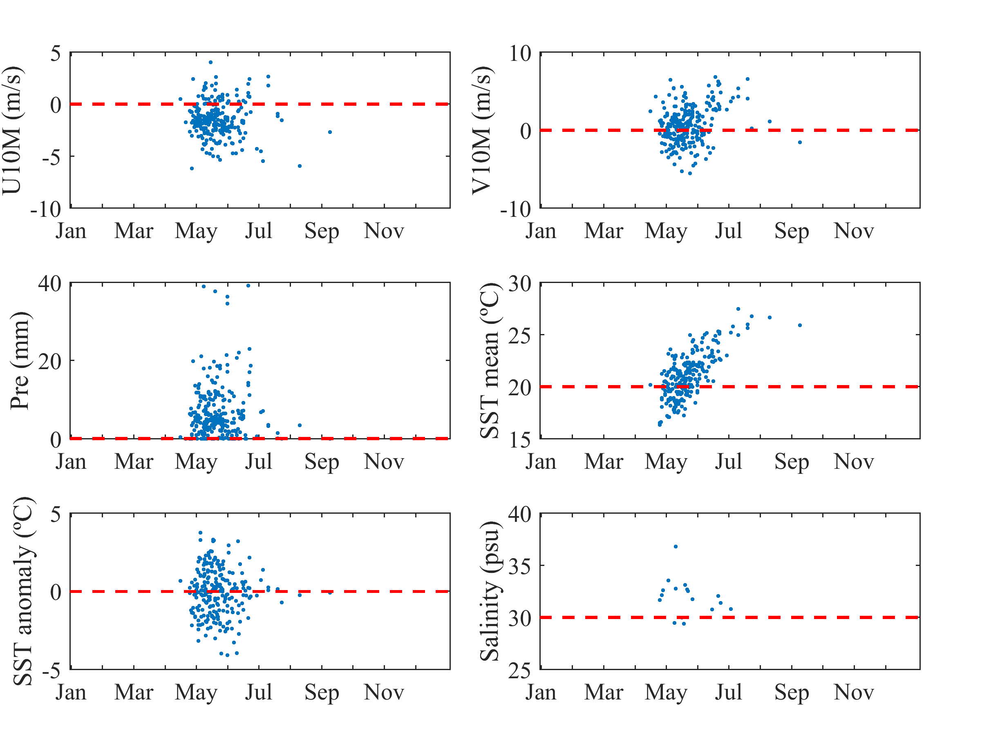
由于东海原甲藻(2002年定种后开始官方记录)是东海海域21世纪后的HABs的最主要的原因种，本研究首先分析了2003年以来的254次的东海海域的东海原甲藻主导的HABs的海洋环境的变化。东海原甲藻是东海海域HABs的主导原因种，确定该藻种的HABs变化的主导驱动因素对掌握该种HABs的变化机制至关重要。
从东海原甲藻主导的HABs发生的起始和终止阶段来看，72%的东海原甲藻的有具体时间记录的HABs在开始时经历了SST升温的过程，同时有64%的该藻种的HABs在结束时伴随着SST的上升，并且有43%的该原因种的HABs在起始和消亡过程中都经历了SST的升温的过程。
从东海原甲藻主导的HABs发生过程来看，风向风速对该藻种主导的HABs的爆发过程有重要的影响。其中，82%的东海原甲藻主导的HABs的主导风向为微弱的东风，43%的HABs则甚至会经历微弱的东南风。同时，67%的东海原甲藻的HABs的SST高于20℃，这表明较高的SST也是该藻种主导的HABs发生过程的重要环境因素。
米氏凯伦藻主导的有害藻华的环境特征
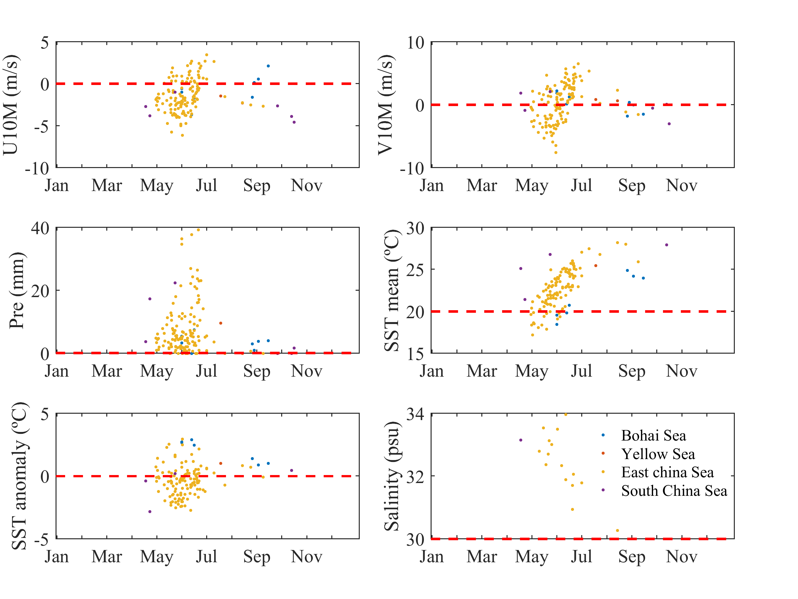
作为东海海域主导有毒有害原因种-米氏凯伦藻主导的HABs的爆发在很大程度上能产生显著的经济损失。因此量化米氏凯伦藻主导的HABs的爆发过程的环境特征信息对于了解该原因种主导的HABs的爆发机制十分重要
在HABs的开始和结束期间，SST的变化对米氏凯伦藻主导的HABs的变化密切相关。其中，70%的该藻种主导的HABs在开始时经历了SST的上升的过程，有65%的HABs结束于SST的上升，并且有42%的HABs在开始和结束期间经历了SST的上升。
米氏凯伦藻主导的HABs对SST温度环境更高，86%的有详细信息记录的HABs的SST高于20℃，并且7-11月的HABs期间的SST都高于23℃。对于HABs的风向风速来说，72%的HABs的主导风向为南风，其中40%的HABs的主导风向为西南风。